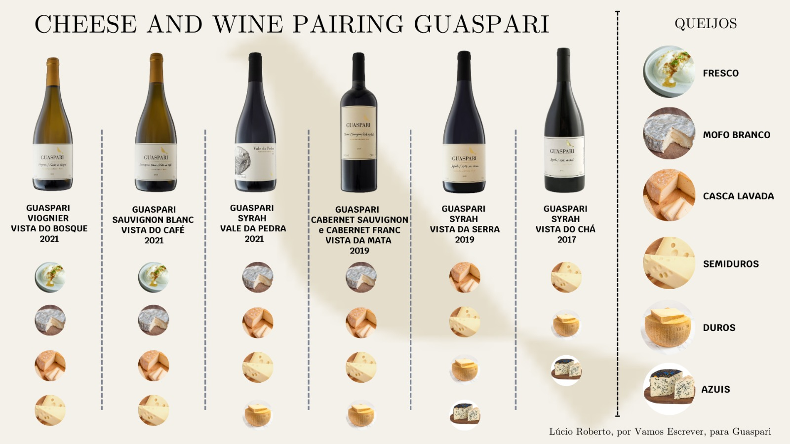

O que é a Harmonização de Vinhos?
A harmonização de vinhos é a técnica de combinar um vinho e um prato para que os sabores de ambos se equilibrem e fiquem ainda melhores.
| Tipo | Corpo | Harmonização |
|---|---|---|
| Tinto | Encorpado | Carnes |
| Branco | Leve | Peixes |
| Rosé | Leve | Massas |
| Espumante | Leve | Aperitivos |
Vinhos e Queijos
Descubra quais vinhos combinam melhor com diferentes tipos de queijos.
